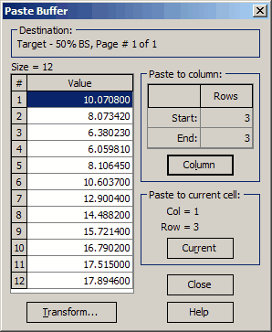

Paste buffer
The paste buffer contains data imported using the menu command Import (F9) (refer to Text Data Import for more details). This buffer is displayed when transferring the imported data to the current spreadsheet. You can choose to enter either a single value into the current cell or an entire column of data.

The Transform button enables you to apply a Transform function that allows for simple modifications to the data in the Paste Buffer before executing the paste operation. These preliminary transformations can be quite beneficial in preparing the data for insertion.
The transfer of data from the Paste Buffer to the source file always begins with the data value highlighted in the data column of the Paste Buffer. There are several options available for transferring data from the Paste Buffer to the source file.
To transfer all values that follow the highlighted value, simply press the Column button in the Paste Buffer. If you attempt to transfer (or paste) more data values than there are rows in the target data file, only the values necessary to fill the available rows in the target file will be transferred. Consequently, you may notice that in such a situation, the data column in the Paste Buffer is not marked as <EMPTY> after the paste operation is completed. This indicates that some values remained in the Paste Buffer since they could not be accommodated in the target file.
To transfer values from the Paste Buffer to a selected group of rows in the target file, first mark the desired rows in the target file using the F7 key. After selecting the rows, you can proceed to transfer the data by pressing the Column button in the Paste Buffer. This action will paste the values from the Paste Buffer into only the marked rows in the target file, ensuring that your data is applied precisely where you need it.
A single value from the Paste Buffer can be transferred to a single row in a specific column of the target file by pressing the “Current” button in the Paste Buffer window. The cell in the target file where the value from the Paste Buffer is to be transferred must be selected with the mouse before the paste operation is executed.
Note that the destination rows and columns of the target file are indicated in the respective information fields in the Paste Buffer window.
If no spreadsheet is open for editing, the “Column” and “Current” buttons will be disabled.